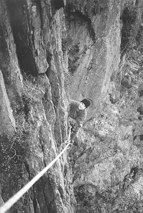

To be perfectly honest camping for me has never been much different to staying in a hotel! With a caravan and special awning its not hard to achieve, so the prospect of real camping - in a tent - was really quite a exciting. Even arriving in the Peak District late and having to set up the tent in the dark didn't dampen my spirits. (The pints in the pub were also quite helpful.)
As we settled in for the night I was feeling very cosy and quite proud of myself. The only problem that I could envisage was needing the toilet in the middle of the night (the two pints mentioned earlier) and not having a Portaloo! Ah well, we were camping.
Then, through my sleepy dreams I heard a scuffling noise. I listened and heard it again. "Matt", I whispered, keeping as still as possible. No response. "Matt", I whispered again (somewhat louder), forgetting to keep still as I attempted kicking him through the sleeping bags.
"Ummm?"
"What's that noise?"
"What noise?"
"Listen. It sounds like something is outside the tent."
"It's the wind. Go to sleep."
'Great', I thought. Then deciding he was probably right I tried to sleep.
Two minutes later it came again, 'scrape, scrape, scrape', except this time it was much louder. Oh my God. Suddenly I remembered what I had been tripping over on my way back from the pub - MOLE HILLS. There was a mole digging under the tent ready to rip through the groundsheet, my thermarest, and 5 season sleeping bag at any moment. 'Scrape, scrape, scrape.'
"Matt, there's a mole under the tent. I can hear it!" 'Scrape, scrape, scrape.' "Oh my God Matt, Matt listen, listen!" (panic makes me duplicate words).'Scrape, scrape, scrape.'
My heart was pounding, and the adrenaline sprinted through my veins. I was more scared than I've ever been climbing. You may be sceptical, but I was truly scared! All I could think of was a huge mole with razor sharp claws and the Tories' famous 'demon' eyes. 'Scrape, scrape, scrape.'
Then, just as I was about to leap out of the tent screaming blue murder Matthew rolled over and said "The moles are coming" whilst scraping his stubble against his sleeping bag. He then proceeded to collapse in laughter at my expression.
All I can say is - actually I said quite a lot but most of it is unprintable and would probably be edited out anyway - that I'll most definitely be taking earplugs on any future trips and a big hammer to deal with moles, be they real or impostors.

Karen braving Crackstone Rib, Carreg Wasted
Photo: Matthew Brown